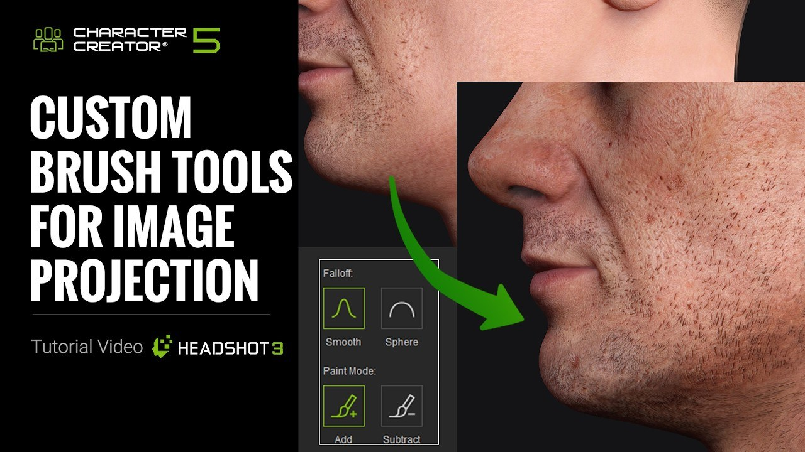

Headshot 3.1：在 Character Creator 內分層繪製與修整臉部貼圖
Reallusion 的 Headshot 3.1 為 Character Creator 5 加入圖層式貼圖編輯，可直接在 3D 角色上繪製 diffuse map，並提供 Clone 與 Stencil 筆刷；3.0 的照片生頭部與身形流程也保留。

角色製作 ★★★☆☆
完整分析
幾何與貼圖流程
Headshot 3 的新模型從照片生成頭部後，可用導引曲線調整頭型與五官，另有 58 組臉部 morph；DeLight、膚色泛紅控制、normal map 大小細節與 Blend Mask 用於修整貼圖。
3.1 製作改進
3.1 把 diffuse map 編輯帶入 Character Creator 視窗，支援圖層與標準混合模式；Clone Brush 可移除小型皮膚瑕疵，Stencil Brush 可把照片紋理投射到角色，減少往返外部影像軟體。
限制與費用
本機頭部生成模型免費執行，但 Nano Banana 驅動的 AI Image Generator 需消耗線上點數；文章記載 2K 為 15 點、4K 為 30 點。Headshot 3.1 需 Character Creator 5，永久授權當時為 199 美元。
BRIEF｜來源已驗證；證據深度較有限，完整分析會明確區分已知資訊與待驗證事項。